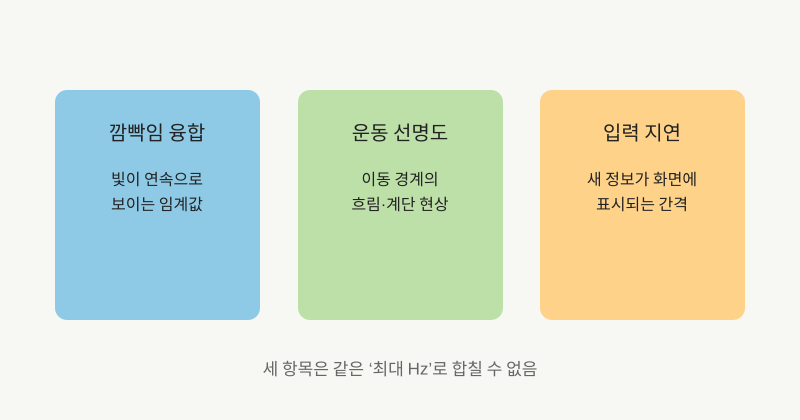
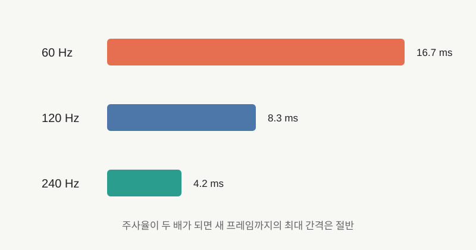

NOTE 15 · VISION SCIENCE
인간 시각에 ‘최대 주사율’이 없는 이유
사람의 눈은 카메라처럼 일정한 프레임 단위로 영상을 만들지 않는다. 망막의 광수용체와 신경회로는 밝기, 색, 공간 위치와 시간 변화를 서로 다른 속도로 처리한다. 따라서 사람이 인식할 수 있는 최대 주사율을 하나의 숫자로 정할 수 없다.

임계 깜빡임 융합 주파수(CFF)는 깜빡이는 광원이 연속광으로 보이기 시작하는 경계다. 이 값은 광원의 밝기, 명암 대비, 크기, 망막의 위치와 관찰자에 따라 달라진다. 균일한 정지 광원 실험에서 자주 나오는 수십 Hz의 값은 특정 실험 조건의 결과이지 시각 전체의 샘플링 속도가 아니다.
넓고 밝은 화면은 주변 시야를 강하게 자극한다. 26명을 대상으로 한 Optica 연구에서는 넓은 시야각의 밝은 디스플레이에서 깜빡임을 피하려면 90Hz를 넘는 조건이 필요했다. 개인 간 차이와 같은 사람의 반복 측정 간 차이도 보고돼 있다.
빠른 안구운동이나 화면 속 고대비 경계에서는 다른 현상이 나타난다. 2015년 Scientific Reports 논문은 단순한 깜빡임이 아니라 공간 경계가 있는 자극에서 500Hz 이상의 변조가 아티팩트로 지각될 수 있음을 보였다. 높은 주파수의 각 프레임을 개별 이미지로 읽었다는 뜻은 아니다. 안구운동으로 변조가 공간 패턴으로 바뀌어 보인 결과다.

움직임 선명도는 CFF와 별개다. LCD와 OLED의 샘플앤드홀드 방식에서는 한 프레임이 다음 갱신까지 유지된다. 시선이 움직이는 물체를 따라갈 때 같은 픽셀 위치가 유지되면 망막 위에서 경계가 퍼져 보인다. 주사율을 높이거나 발광 시간을 줄이는 방식이 이 흐림을 줄인다.
주사율은 입력 지연에도 영향을 준다. 60Hz의 프레임 간격은 약 16.7ms, 120Hz는 8.3ms, 240Hz는 4.2ms다. 실제 지연에는 입력장치, 게임 엔진, 렌더링 큐와 디스플레이 처리 시간이 더해지지만 표시 주기가 짧아지면 새 정보가 화면에 나올 때까지 기다리는 최대 시간이 감소한다.
콘텐츠 프레임률과 패널 주사율도 구분해야 한다. 240Hz 패널에 60fps 콘텐츠를 반복 표시하면 입력 지연 일부는 줄 수 있지만 새로운 운동 샘플은 초당 60개뿐이다. 반대로 높은 프레임률을 낮은 주사율 화면에 보내면 모든 프레임을 온전히 표시할 수 없다.
정리하면 ‘인간은 몇 Hz까지 본다’는 질문에는 실험 조건이 빠져 있다. 깜빡임 검출, 움직이는 물체의 위치 판별, 경계 아티팩트와 반응시간은 서로 다른 과제다. 60Hz에서 120Hz로 갈 때와 240Hz에서 더 높아질 때의 이득도 같지 않지만, 보편적인 단일 상한을 제시할 근거는 없다.